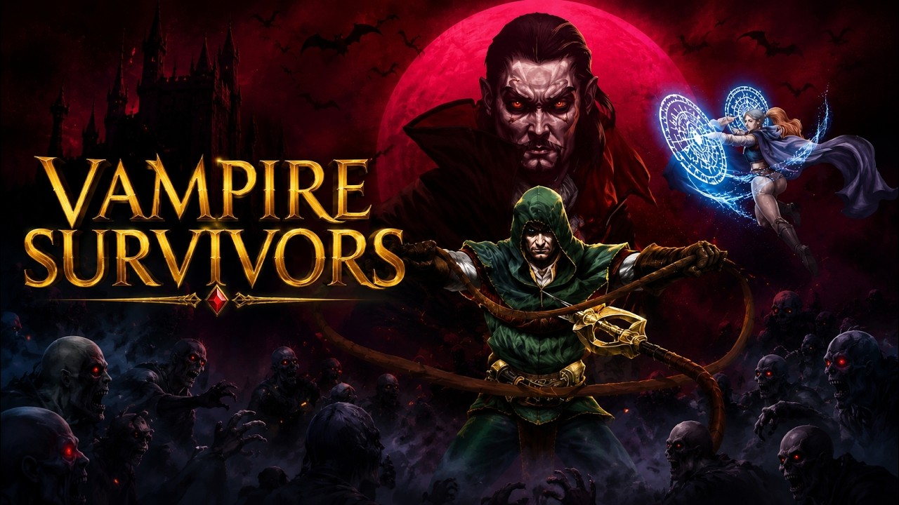

Vampire Survivors

Vampire Survivors may seem simple at first, but there is a surprising amount of depth behind its gameplay. I find the progression and combat extremely satisfying, and I’m especially impressed by how well optimized the game is considering the huge number of enemies, projectiles, and effects that can appear on screen at once. It has great replayability, and while most of the DLCs are fairly short, they add plenty of fun characters and weapons to experiment with. It’s the kind of game I can easily spend hours playing.